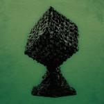
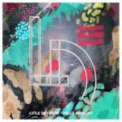
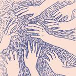
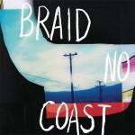

Music Reviews
-

Pallbearer Foundations of Burden
Doom metal may be considered a niche genre impenetrable for most non-metal fans, but Pallbearer's latest opus transcends such trappings with it's intricate-yet-inviting sonic realms, making this the ultimate entry point into the genre.
Peter Quinton reviews... -

Merchandise After The End
The art rock Tampa foursome make their grand debut on 4AD, a revisionist pop record that takes the opportunity to develop their ear for eighties balladry.
Juan Edgardo Rodríguez reviews... -

Jenny Lewis The Voyager
Former Rilo Kiley frontwoman grows up and looks back on her third solo record.
Joe Rivers voyages to the centre of the album... -

Little Daylight Hello Memory
Little Daylight's debut record is an exhilarating, joyful trip that you'll want to take over and over again. The melodies are catchy, the music sounds fresh and the trio genuinely sounds like they are having the time of their lives.
Joe Marvilli thinks that a little daylight goes a long way.... -

FKA Twigs LP1
The British singer-songwriter's debut effort means to push the boundaries of synthtetic pop, mincing trenchant sound bytes that convey a state of uncertainty amid depictions of unbridled sexual desire.
Juan Edgardo Rodríguez reviews... -

Adult Jazz Gist Is
Gist Is, the debut album from art rock quartet Adult Jazz, is a lot all at once. But you eventually get the hang of it.
Sean Caldwell reviews... -

Braid No Coast
The Midwest emo legends' new record has its moments, but ultimately falls far short of Braid's crowning achievement Frame & Canvas.
Stephen Wragg reviews... -

Spoon They Want My Soul
Texas natives Spoon celebrate two decades together with their eighth full-length record, another dependable effort that forges a solidly constructed set of power pop whilst pronouncing their proverbial strut.
Juan Edgardo Rodríguez reviews... -

Lana Del Rey Ultraviolence
Before her first album was even released, the critical perception of Lana Del Rey seemed to go from feted ingenue to reviled fraud. But what about album number two?
Mark Davison hopes he has something worth adding to the conversation... -

Joyce Manor Never Hungover Again
Joyce Manor may have toned things down a bit on their latest album, but the California punks still manage to pack plenty of infectious hooks and self-loathing into roughly 20 minutes of music.
Peter Quinton reviews...